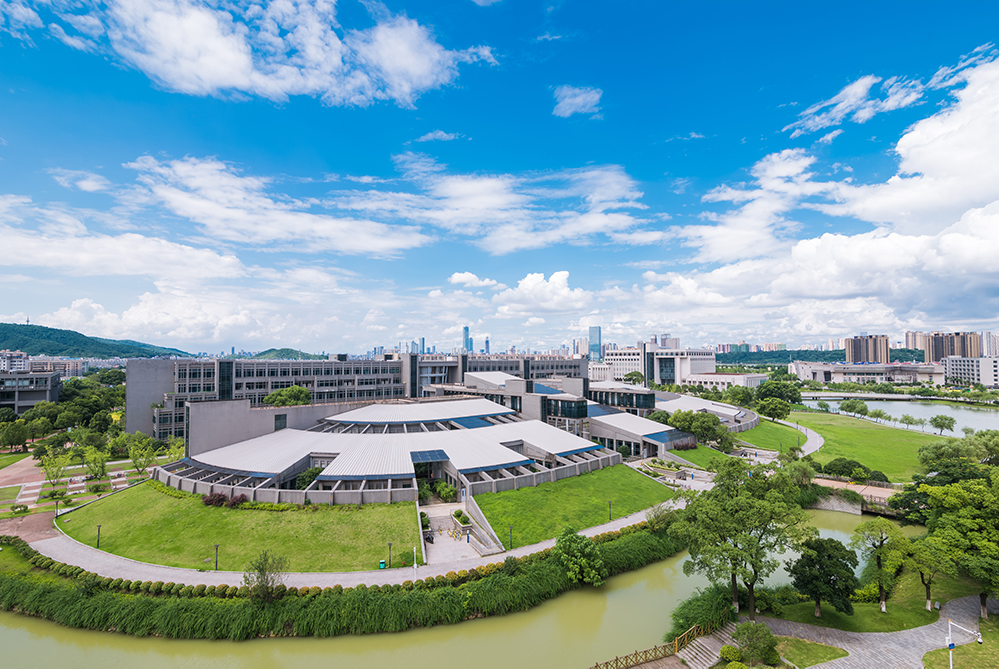
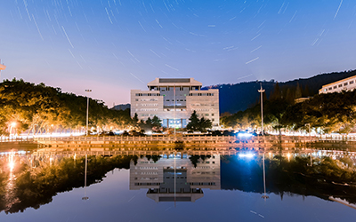

中南大学坐落在中国历史文化名城——湖南省长沙市，占地面积317万平方米。跨湘江两岸，依巍巍岳麓，临滔滔湘水，环境幽雅，景色宜人，是求知治学的理想园地。学校设有33个二级学院，拥有享“南湘雅”美誉的湘雅医院、湘雅二医院、湘雅三医院3所大型三级甲等综合性医院及湘雅口腔医院，和湘雅医学院附属海口医院、附属肿瘤医院、附属儿童医院、附属长沙医院、附属株洲医院、附属常德医院6所非直属附属医院。
中南大学由原湖南医科大学、长沙铁道学院与中南工业大学于2000年4月合并组建而成。原中南工业大学的前身为创建于1952年的中南矿冶学院，原长沙铁道学院的前身为创建于1953年的中南土木建筑学院。原湖南医科大学的前身为1914年创建的湘雅医学专门学校，是我国创办最早的西医高等学校之一。
中南大学历经百年办学积淀，顺应中国高等教育体制改革大势，弘扬以“知行合一、经世致用”为核心的大学精神，力行“向善、求真、唯美、有容”的校风，坚持自身办学特色，服务国家和社会重大需求，团结奋进，改革创新，追求卓越，综合实力和整体水平大幅提升。
学校学科门类齐全，拥有完备的有色金属、医学、轨道交通等学科体系，涵盖哲学、经济学、法学、教育学、文学、理学、工学、医学、管理学、艺术学、交叉学科等11大学科门类，辐射军事学。学校是学位授权自主审核单位，现有
-
44个一级学科博士学位授权点44个
-
48个一级学科硕士学位授权点48个
-
14个博士专业学位授权点14个
-
31个硕士专业学位授权点31个
-
32个博士后科研流动站32个
-
6个一级学科国家重点学科6个
-
12个二级学科国家重点学科12个
-
1个国家重点（培育）学科1个
-
106个国家临床重点（培育）专科106个
数学、材料科学与工程、冶金工程、矿业工程、交通运输工程5个学科入选国家“双一流”建设学科；材料科学、工程学、临床医学、计算机科学、化学、药理学与毒理学、生物学与生物化学、神经科学与行为学、数学、分子生物学与遗传学、社会科学总论、免疫学、精神病学与心理学、地球科学、环境科学与生态学、农业科学、物理学、微生物学、经济学与商学等19个学科进入基本科学指标全球前百分之一，其中材料科学、工程学、临床医学、计算机科学、化学、药理学与毒理学、环境科学与生态学、生物学与生物化学、分子生物学与遗传学居全球前千分之一，材料科学、工程学进入全球前万分之一。
师 资
力 量 雄 厚
-
17 人两院院士17人
-
41 人国家杰出青年科学基金获得者41人
-
2213 人教授及相应正高职称人员2213人
-
353 人享受政府特殊津贴专家353人
-
4 个全国高校黄大年式教师团队4个
学校坚持立德树人，质量优先，努力探索和完善人才培养新模式。
-
6.4万余名
全日制在校学生6.4万余名
-
3.6万余名
本科生3.6万余名
-
2.6万余名
研究生2.6万余名
-
2200余名
国际学生2200余名
学校现有104个本科专业，招生专业89个，其中国家级一流本科专业建设点72个，国家一流本科课程84门，获国家教学成果奖39项，国家级课程思政示范项目4项，国家级教师教学竞赛一等奖5项。学校在国内率先创办创新型高级工程人才试验班，为教育部卓越工程师、卓越医师、卓越法律人才教育培养计划首批试点高校。入选教育部“强基计划”首批试点高校，八年制医学教育（医学博士学位）试点高校，是首批高水平公共卫生学院建设单位，首家培养“指技合一”现役军官硕士研究生的普通高校，首批教育部研究生教育创新计划实施高校，首批“国家建设高水平大学公派研究生项目”高校，首批获得工程博士专业学位授予权的高校，首批“国家优秀中小学教师培养计划”试点高校，获批国家卓越工程师学院建设高校。入选全国首批毕业生就业典型经验高校、全国首批深化创新创业教育改革示范高校、全国大众创业万众创新示范基地。
学校坚持瞄准国家和社会重大需求，深入推进协同创新，积极服务国民经济建设和国防现代化建设主战场。
-

-
-

-

-

学校坚持开放办学，国际合作与交流活跃，是全国首批通过来华留学质量认证高校，先后与美、英、澳、加、日、法、德、俄等63个国家和地区的310所大学和科研机构建立了长期合作关系，与众多跨国企业集团广泛开展产学研合作，发起成立及参与大学国际联盟16个。获批国家学科创新引智基地14个，中外合作办学机构1个、项目3个，孔子学院2所。
学校牢牢把握社会主义办学方向，始终坚持党委领导下的校长负责制，全面提升学校党建与思想政治工作科学化水平，为改革发展稳定提供坚强的思想、政治和组织保证。学校获评全国党的建设和思想政治工作先进高校、全国精神文明建设工作先进单位、全国基层思想政治工作先进典型单位、全国文明校园等。
学校的建设和发展得到了党和国家领导人的亲切关怀和充分肯定。近年来，习近平总书记等11位中央政治局常委在内的50余位党和国家领导人相继来校视察，对学校的改革创新、人才培养、科学研究、社会服务等各项工作给予高度评价。
惟楚有材，于斯为盛”，今天的中南大学正肩负着国家高水平大学建设的历史责任，立足湖南，面向全国，放眼世界，大力推进学校高质量内涵式发展，努力建设特色鲜明的世界一流大学，为全面建设社会主义现代化国家、全面推进中华民族伟大复兴作出更大贡献！